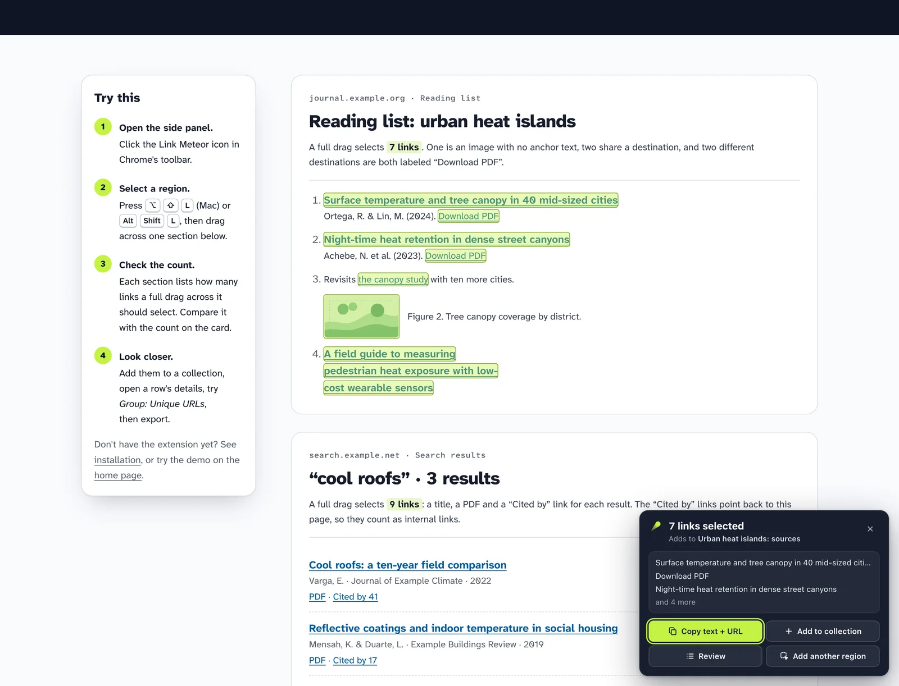
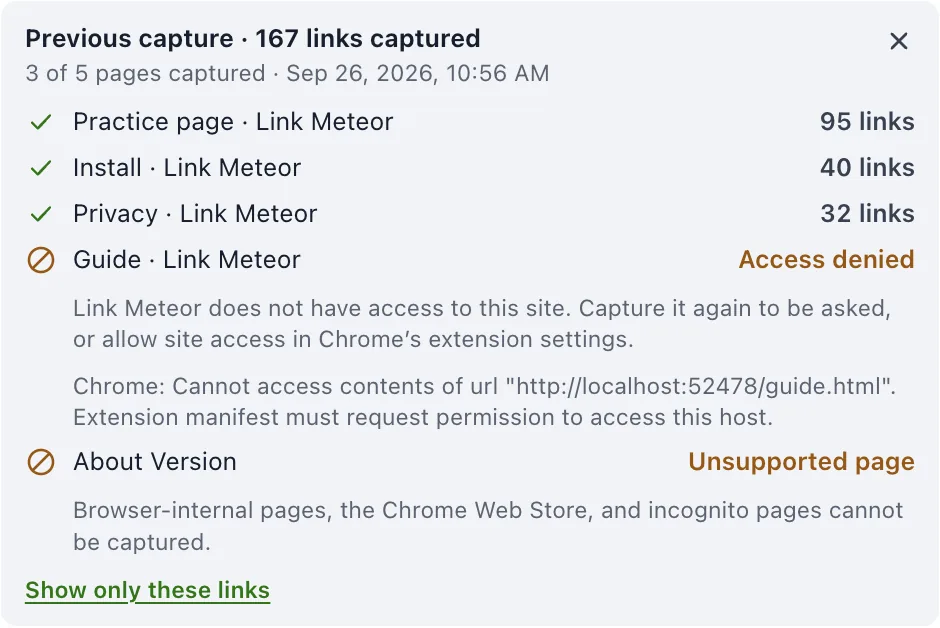
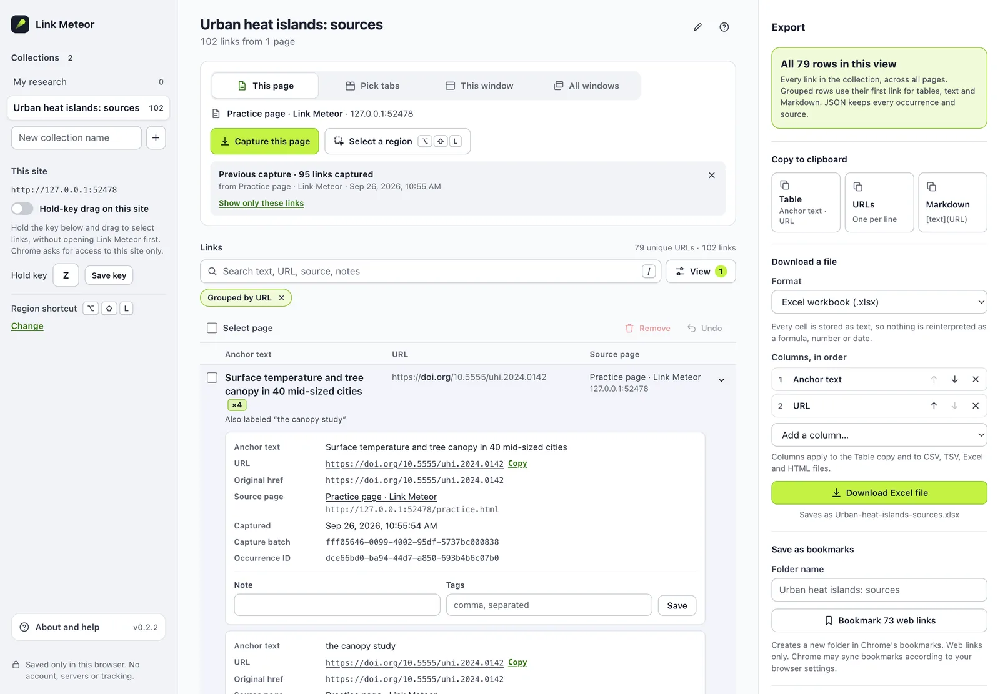

Free Chrome extension · Development build
Capture the trail. Keep the source.
Drag across any part of a webpage to collect its links. Each one keeps its real anchor text, its exact URL and the page it came from, ready for a spreadsheet, a document or your bookmarks.
- Free forever
- No account
- No tracking
- Stays in your browser
journal.example.org/reading-lists/uhi
Reading list: urban heat islands
Drag across the list
Anchor text and URL, kept in separate columns
| Anchor text | URL |
|---|
Press and drag over the reading list to select links, the way the extension does on a real page.
Watch it on a real page
Under a minute on the practice page: select a region, save it, check the separate fields, group by URL, then export a workbook.
Read the transcript
- 0:00
Picture The Link Meteor artwork: a glowing lime meteor beside the name.
- 0:03
Picture On the practice page, the reading list is selected with a drag. Seven links are highlighted, and a card reads “7 links selected, adds to Urban heat islands: sources.” Add to collection saves them.
- 0:03
Press the shortcut on any page to select a region.
- 0:07
Drag across the links you want. Each match lights up.
- 0:12
7 links selected, and the card says where they’ll go.
- 0:14
Add them to a collection, or copy two columns right away.
- 0:17
Picture The full view lists the seven links with anchor text, URL and source page in separate columns. The image link shows “No anchor text” with its accessible label. Grouping by URL shows one link twice, also labeled “the canopy study”, and its details list both occurrences. Removing the grouping restores all seven rows, and Download Excel file saves a workbook.
- 0:17
Anchor text, URL and source page stay in separate fields.
- 0:21
An image link keeps empty anchor text. Its alt text is kept as a separate label.
- 0:26
Group by URL when you want. Every label stays visible.
- 0:32
Open a group to see each occurrence and where it came from.
- 0:38
Switch back any time. All 7 occurrences are still there.
- 0:42
Download Excel, CSV, Markdown, JSON and more.
- 0:44
Picture The downloaded workbook has a header row and seven rows of anchor text and URL; the image link’s anchor text cell is empty.
- 0:45
Two clean columns: anchor text and URL.
- 0:47
The image link’s anchor text stays empty. Nothing is invented.
- 0:50
Picture Closing card: free forever, no account, no tracking, stays in your browser. The website address and “Made by Ryan Kamp.”
Two fields. Never merged.
Most link tools flatten a link into one string, or swap its label for the destination's title. Link Meteor keeps exactly what the page showed, and exactly where it pointed.
What Link Meteor saves
- Anchor text
- Download PDF
- URL
- https://journal.example.org/articles/uhi-2024-0142.pdf
- Original href
- /articles/uhi-2024-0142.pdf
- Source page
- Reading list: urban heat islands
journal.example.org/reading-lists/uhi - Captured
- 25 Sep 2026, 14:12 · with its capture batch
- Your notes
- Notes and tags you add, kept apart from what was captured
-
A label is what the link says
“Download PDF” stays “Download PDF”. It is never replaced by the destination's title, and Link Meteor never visits the destination to look one up.
-
Empty stays empty
An image-only link has no anchor text, so that field is left empty. Its alt text or ARIA label is saved in a separate, clearly named field.
-
Duplicates are kept
The same URL linked twice with different labels is two occurrences. Group by URL when you want to, ungroup any time; nothing is merged or thrown away.
From one paragraph to every open tab
Choose exactly how much to collect. Link Meteor shows the scope before it captures, and asks Chrome for access only when a feature needs it.
-
A region
Press ⌥ ⇧ L on a Mac or Alt Shift L on Windows and Linux, then drag. Matching links light up with a live count. Scroll while dragging to reach more, or add another region.
Uses temporary access to the page you invoke it on.
-
Hold a key and drag
On sites you choose, hold a letter key and drag without opening Link Meteor first. Typing in a text field never triggers it.
Optional. Asks for access to that one site; stops if you remove it.
-
This page
Every loaded link on the page, including links inside open shadow roots and same-origin frames.
Uses temporary access to the page you invoke it on.
-
Tabs you pick
Choose exact open tabs from a list grouped by window. Tabs opened after you start are left out.
Optional. Asks to see your tab list, and for access to the sites you pick.
-
This window, or all windows
Every ordinary tab, up to 100 per capture, each with its own result. Browser pages, the Chrome Web Store and incognito windows are left out and named as such.
Optional. Same tab-list and site access requests as picked tabs.

When a page can't be read, it says so
A multi-tab capture reports every page separately. A page with no links is not the same as a page Link Meteor wasn't allowed to read, and it never pretends otherwise.
- CapturedWith the exact count, plus any coverage notes such as frames it could not enter.
- No linksThe page loaded and genuinely has no links it can read.
- Access denied or unsupportedSite access was declined, or Chrome doesn't allow extensions there.
- FailedThe tab closed or changed during capture. Everything that succeeded is still kept.

Curate without losing anything
Captures land in named collections saved on your computer. Review them beside the page in Chrome's side panel, or open the full workbench in a tab.
- Search anchor text, URLs, source pages, notes and tags.
- Filter by domain, file type, or links that stay on the source site.
- Group by URL to see every label and page that points to it, then switch back.
- Open any link to see its full provenance and add notes and tags.
- Remove what you don't need, with undo that restores the original order.

Take it anywhere
Copy two clean columns straight into a spreadsheet, or download a file. Choose which fields to include and in what order. This preview uses the extension's own export code on the links you selected in the demo above.
Excel workbook
Every cell is stored as text, so nothing is reinterpreted as a formula, number or date.
- Excel .xlsx
- CSV
- TSV
- Markdown links
- HTML table
- JSON with full provenance
- URL list
- Clipboard
- Chrome bookmark folder
- Open up to 20 in tabs
Private by construction
Link Meteor has no server to send anything to. Your collections are stored by Chrome on your computer, the extension contains no code that contacts a server, and its security policy forbids its pages from making network requests.
- No accountNothing to sign up for, nothing to sign in to.
- No serversNo backend, no sync service, no cloud copy.
- No trackingNo analytics, telemetry or ads, in the extension or on this site.
- No paid tierEvery feature is free, with no limits to unlock.
What it doesn't do, yet
Plain limits, so you know what to expect before you rely on it.
- Only what's loadedIt doesn't scroll infinite feeds, follow pagination or crawl sites. Links that haven't loaded yet aren't there to capture.
- Some parts of pages are closed to itFrames from other sites and closed shadow roots can't be read. Captures say when frames were skipped.
- No PDF text or button scriptsA link to a PDF is captured; links inside the PDF are not. JavaScript-only buttons without a real link aren't links.
- Desktop Chrome only, for nowThere's no Firefox, Safari or mobile version. Chrome's own pages, the Web Store and incognito are off limits.
- No citations or titles inventedIt never fetches destinations, so it won't look up authors, dates or DOIs for you.
- No import or cloud backupCollections live in this browser profile. Export anything you want to keep elsewhere.
Try the development build
Link Meteor isn't in the Chrome Web Store yet. You can load the current build into desktop Chrome yourself in a couple of minutes, then practice on a page made for it.